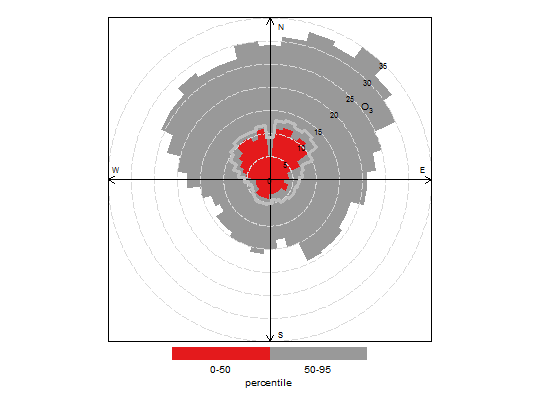

Function to plot percentiles by wind direction
percentileRose plots percentiles by wind direction with
flexible conditioning. The plot can display mutiple percentile
lines or filled areas.
percentileRose(mydata, pollutant = "nox", wd = "wd", type = "default", percentile = c(25, 50, 75, 90, 95), smooth = FALSE, method = "default", cols = "default", angle = 10, mean = TRUE, mean.lty = 1, mean.lwd = 3, mean.col = "grey", fill = TRUE, intervals = NULL, angle.scale = 45, auto.text = TRUE, key.header = NULL, key.footer = "percentile", key.position = "bottom", key = TRUE, ...)
Arguments
- mydata
- A data frame minimally containing
wdand a numeric field to plot ---pollutant. - pollutant
- Mandatory. A pollutant name corresponding to a
variable in a data frame should be supplied e.g.
pollutant = "nox". More than one pollutant can be supplied e.g.pollutant = c("no2", "o3")provided there is only onetype. - wd
- Name of the wind direction field.
- type
typedetermines how the data are split i.e. conditioned, and then plotted. The default is will produce a single plot using the entire data. Type can be one of the built-in types as detailed incutDatae.g. “season”, “year”, “weekday” and so on. For example,type = "season"will produce four plots --- one for each season. It is also possible to choosetypeas another variable in the data frame. If that variable is numeric, then the data will be split into four quantiles (if possible) and labelled accordingly. If type is an existing character or factor variable, then those categories/levels will be used directly. This offers great flexibility for understanding the variation of different variables and how they depend on one another. Type can be up length two e.g.type = c("season", "weekday")will produce a 2x2 plot split by season and day of the week. Note, when two types are provided the first forms the columns and the second the rows.- percentile
- The percentile value(s) to plot. Must be between
0--100. If
percentile = NAthen only a mean line will be shown. - smooth
- Should the wind direction data be smoothed using a cyclic spline?
- method
- When
method = "default"the supplied percentiles by wind direction are calculated. Whenmethod = "cpf"the conditional probability function (CPF) is plotted and a single (usually high) percentile level is supplied. The CPF is defined as CPF = my/ny, where my is the number of samples in the wind sector y with mixing ratios greater than the overall percentile concentration, and ny is the total number of samples in the same wind sector (see Ashbaugh et al., 1985). - cols
- Colours to be used for plotting. Options include
“default”, “increment”, “heat”,
“jet” and
RColorBrewercolours --- see theopenairopenColoursfunction for more details. For user defined the user can supply a list of colour names recognised by R (typecolours()to see the full list). An example would becols = c("yellow", "green", "blue") - angle
- Default angle of “spokes” is when
smooth = FALSE. - mean
- Show the mean by wind direction as a line?
- mean.lty
- Line type for mean line.
- mean.lwd
- Line width for mean line.
- mean.col
- Line colour for mean line.
- fill
- Should the percentile intervals be filled (default) or
should lines be drawn (
fill = FALSE). - intervals
- User-supplied intervals for the scale e.g.
intervals = c(0, 10, 30, 50) - angle.scale
- The pollutant scale is by default shown at a 45
degree angle. Sometimes the placement of the scale may interfere
with an interesting feature. The user can therefore set
angle.scaleto another value (between 0 and 360 degrees) to mitigate such problems. For exampleangle.scale = 315will draw the scale heading in a NW direction. - auto.text
- Either
TRUE(default) orFALSE. IfTRUEtitles and axis labels will automatically try and format pollutant names and units properly e.g. by subscripting the ‘2’ in NO2. - key.header
- Adds additional text/labels to the scale key.
For example, passing options
key.header = "header", key.footer = "footer"adds addition text above and below the scale key. These arguments are passed todrawOpenKeyviaquickText, applying theauto.textargument, to handle formatting. - key.footer
key.header.- key.position
- Location where the scale key is to plotted.
Allowed arguments currently include
"top","right","bottom"and"left". - key
- Fine control of the scale key via
drawOpenKey. SeedrawOpenKeyfor further details. - ...
- Other graphical parameters are passed onto
cutDataandlattice:xyplot. For example,percentileRosepasses the optionhemisphere = "southern"on tocutDatato provide southern (rather than default northern) hemisphere handling oftype = "season". Similarly, common graphical arguments, such asxlimandylimfor plotting ranges andlwdfor line thickness when usingfill = FALSE, are passed onxyplot, although some local modifications may be applied by openair. For example, axis and title labelling options (such asxlab,ylabandmain) are passed toxyplotviaquickTextto handle routine formatting.
Value
As well as generating the plot itself,
percentileRose also returns an object of class
“openair”. The object includes three main components:
call, the command used to generate the plot; data,
the data frame of summarised information used to make the plot;
and plot, the plot itself. If retained, e.g. using
output <- percentileRose(mydata, "nox"), this output can
be used to recover the data, reproduce or rework the original
plot or undertake further analysis.
An openair output can be manipulated using a number of generic
operations, including print, plot and
summary.
Details
percentileRose calculates percentile levels of a pollutant
and plots them by wind direction. One or more percentile levels
can be calculated and these are displayed as either filled areas
or as lines.
The wind directions are rounded to the nearest 10 degrees,
consistent with surface data from the UK Met Office before a
smooth is fitted. The levels by wind direction are optionally
calculated using a cyclic smooth cubic spline using the option
smooth. If smooth = FALSE then the data are shown in
10 degree sectors.
The percentileRose function compliments other similar
functions including windRose,
pollutionRose, polarFreq or
polarPlot. It is most useful for showing the
distribution of concentrations by wind direction and often can
reveal different sources e.g. those that only affect high
percentile concentrations such as a chimney stack.
Similar to other functions, flexible conditioning is available
through the type option. It is easy for example to consider
multiple percentile values for a pollutant by season, year and so
on. See examples below.
percentileRose also offers great flexibility with the scale
used and the user has fine control over both the range, interval
and colour.
References
Ashbaugh, L.L., Malm, W.C., Sadeh, W.Z., 1985. A residence time probability analysis of sulfur concentrations at ground canyon national park. Atmospheric Environment 19 (8), 1263-1270.
See also
See Also as windRose,
pollutionRose, polarFreq,
polarPlot
Examples
# basic percentile plot percentileRose(mydata, pollutant = "o3")# 50/95th percentiles of ozone, with different colours percentileRose(mydata, pollutant = "o3", percentile = c(50, 95), col = "brewer1")## Not run: ------------------------------------ # # percentiles of ozone by year, with different colours # percentileRose(mydata, type = "year", pollutant = "o3", col = "brewer1") # # # percentile concentrations by season and day/nighttime.. # percentileRose(mydata, type = c("season", "daylight"), pollutant = "o3", col = "brewer1") ## ---------------------------------------------